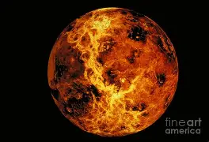

Vénus est la deuxième planète du Système solaire par ordre d'éloignement au Soleil, et la sixième plus grosse aussi bien par la masse que le diamètre.
Vénus orbite autour du Soleil tous les 224,7 jours terrestres. Avec une période de rotation de 243 jours terrestres, il lui faut plus de temps pour tourner autour de son axe que toute autre planète du Système solaire. Comme Uranus, elle possède une rotation rétrograde et tourne dans le sens opposé à celui des autres planètes : le Soleil s'y lève à l'ouest et se couche à l'est. Vénus possède l'orbite la plus circulaire des planètes du Système solaire avec une excentricité orbitale presque nulle et, du fait de sa lente rotation, est quasiment sphérique (aplatissement considéré comme nul). Elle ne possède pas de satellite naturel.
Vénus est l'une des quatre planètes telluriques du Système solaire. Elle est parfois appelée la « planète sœur » de la Terre en raison des similitudes relatives de leurs diamètres, masses, proximités au Soleil et compositions. Par d'autres aspects, elle est radicalement différente de la Terre : son champ magnétique est bien plus faible et elle possède une atmosphère beaucoup plus dense, composée de dioxyde de carbone à plus de 96 %. La pression atmosphérique à la surface de la planète est ainsi 92 fois supérieure à celle de la Terre, soit environ la pression ressentie, sur Terre, à 900 mètres sous l'eau. Elle est la planète la plus chaude du Système solaire — même si Mercure est plus proche du Soleil — avec une température de surface moyenne de 462 °C (735 K). La planète est enveloppée d'une couche opaque de nuages d'acide sulfurique, hautement réfléchissants pour la lumière visible, empêchant sa surface d'être vue depuis l'espace. Bien que la présence d'océans d'eau liquide à sa surface par le passé soit supposée, la surface de Vénus est un paysage désertique sec et rocheux où se déroule toujours un volcanisme. La topographie de Vénus présente peu de reliefs élevés et consiste essentiellement en de vastes plaines géologiquement très jeunes : quelques centaines de millions d'années.
Pour plus d'information, cliquez ici